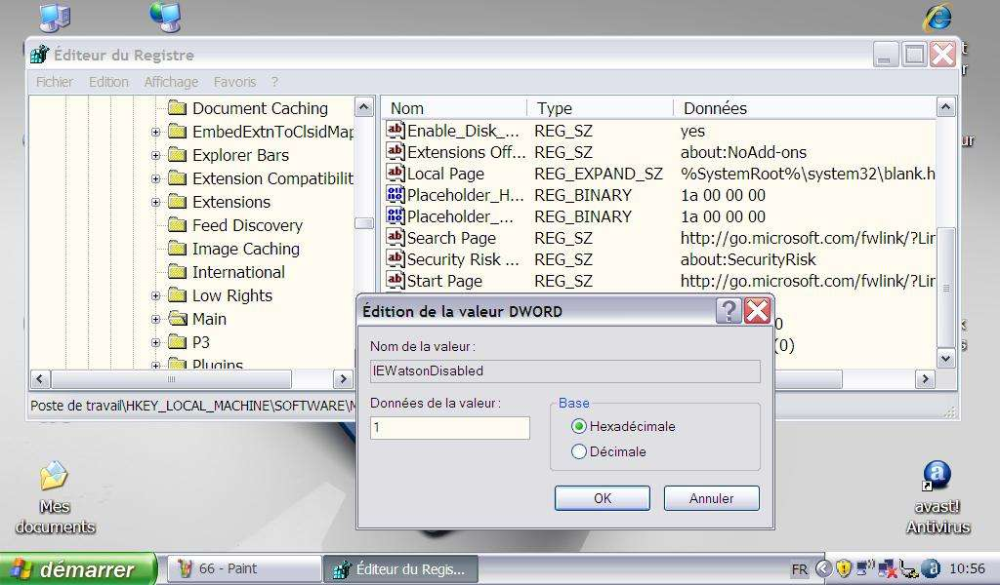

Version 1.0 (créé le 07/07/2021, modifié le 07/07/2021)
Fonctionne sur : Windows XP et supérieur
Lorsqu'un logiciel fait l'objet d'un plantage, Microsoft affiche une fenêtre de dialogue proposant d'envoyer un rapport d'erreurs. Si vous ne désirez plus voir cette fenêtre apparaître, il faut alors supprimer cette fonction d'un des services de Windows intitulé Doctor Watson :
Lancez Regedit et repérez la ruche HKEY_LOCAL_MACHINE ;
Ouvrez la clé HKEY_LOCAL_MACHINE/SOFTWARE/Microsoft/Internet Explorer/Main ;
Créez la valeur DWORD IEWatsonDisabled et affectez-lui la valeur 1 ;

Redémarrez l'ordinateur après avoir fermé Regedit.